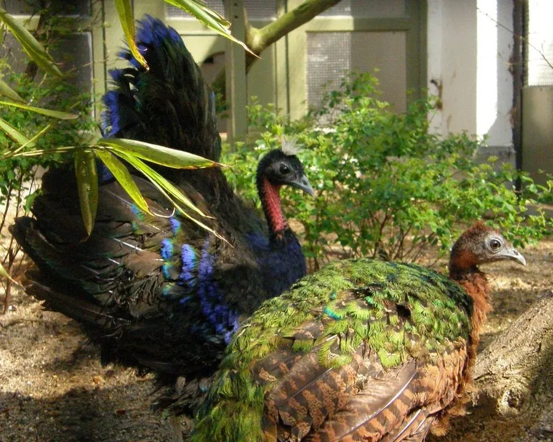

鸟类 · 动物界
刚果孔雀 Afropavo congensis

非洲刚果盆地特有的孔雀，雄鸟羽色深蓝近黑，喉部裸皮鲜红，尾羽端部白色，1936 年才被科学界确认，习性隐秘。
- 分类
- 门脊索动物门纲鸟纲目鸡形目科雉科属刚果孔雀属
- 栖息环境
- 刚果盆地低地热带雨林的密林底层，多在海拔 350–1500 m 之间
- 地理分布
- 非洲刚果民主共和国中部的刚果盆地雨林，为该地区特有种
- 保护级别
- IUCN 易危（VU）
物种志
刚果孔雀体长 60–70 cm，雄鸟体重约 1.1–1.4 kg，雌鸟略小。雄鸟通体深蓝黑色，具金属光泽，头顶有短而蓬松的冠羽，面部和喉部裸皮呈鲜红色，尾羽端部为白色，飞行时格外醒目；雌鸟以栗褐色为主，背部和尾羽带绿色光泽，腹部有黑白斑纹。
它是非洲中部的特有种，仅分布于刚果民主共和国境内的低地热带雨林，活动于海拔约 350–1500 m 的密林底层。刚果孔雀生性隐秘，多在晨昏活动，以果实、种子、昆虫和蠕虫为食。与亚洲孔雀不同，它们倾向一雄一雌，雄鸟会参与育雏；每窝产卵 2–4 枚，孵化约 26–28 天。由于雨林采伐、采矿和狩猎，其种群持续下降，被列为易危物种。
形态与习性
- 食性果实、种子、昆虫和蠕虫
- 体长60–70 cm
- 体重雄鸟约 1.1–1.4 kg
- 繁殖每窝 2–4 枚，孵化约 26–28 天
- 发现1936 年由查平确认，是最后被发现的孔雀
- 习性一雄一雌，雄鸟参与育雏
趣味知识
- 刚果孔雀直到 1936 年才被科学界确认，是最后被发现的孔雀类之一。
- 与喜欢开屏的蓝孔雀不同，刚果孔雀的尾羽较短，求偶展示也低调得多。
- 它是刚果盆地雨林的特有种，分布范围几乎全部位于刚果民主共和国境内。